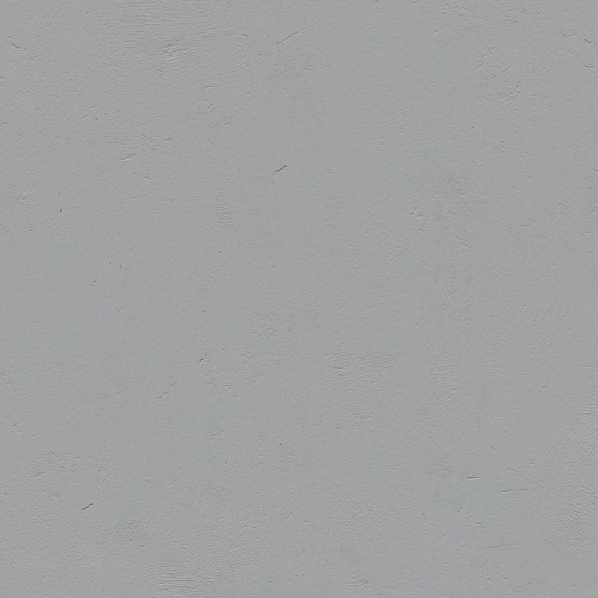

口コミ
こんなひとことが届くかもしれない
カフェという業種から自然に想像できる声を、制作側が創作したものです。
以下は制作側が考えた創作のイメージ例で、実在のお客様の投稿ではありません。実際の口コミ・評価とは関係ありません。
いつか行ってみたいカフェです。まずはInstagramをのぞいてみたいと思います。
「オールトーンズ」という店名の響きが気になります。どんなお店なのか、投稿を見て想像をふくらませてみたいです。
千歳市に行く機会があれば、一度立ち寄ってみたいです。営業の情報が分かったら、足を運んでみたいと思います。
